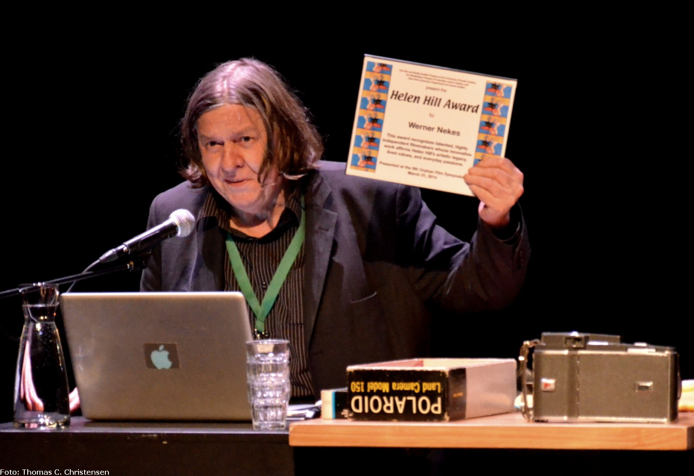
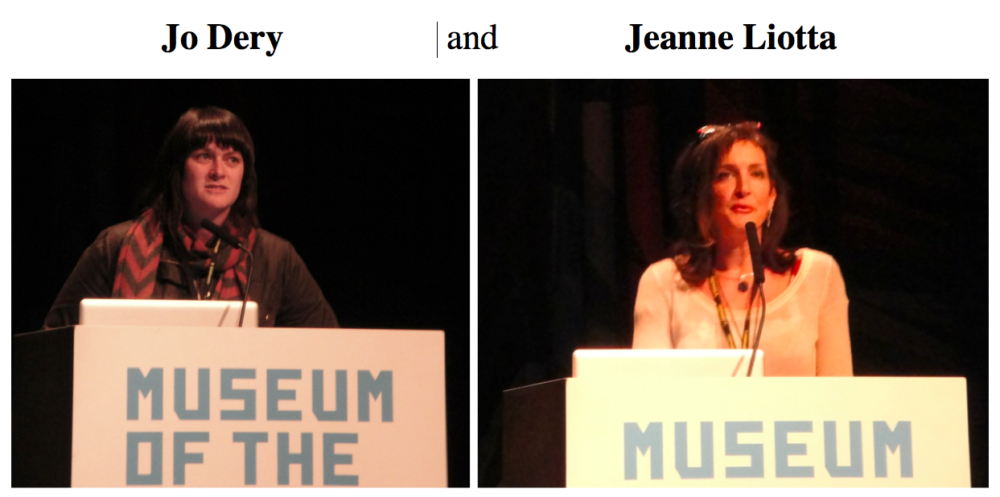
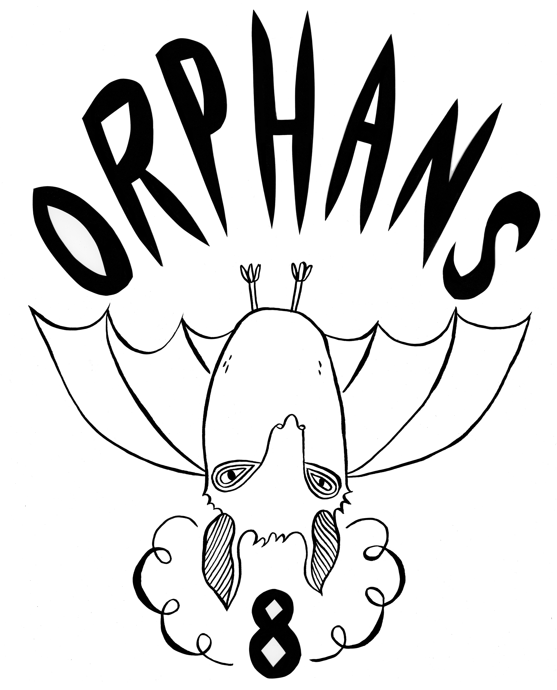
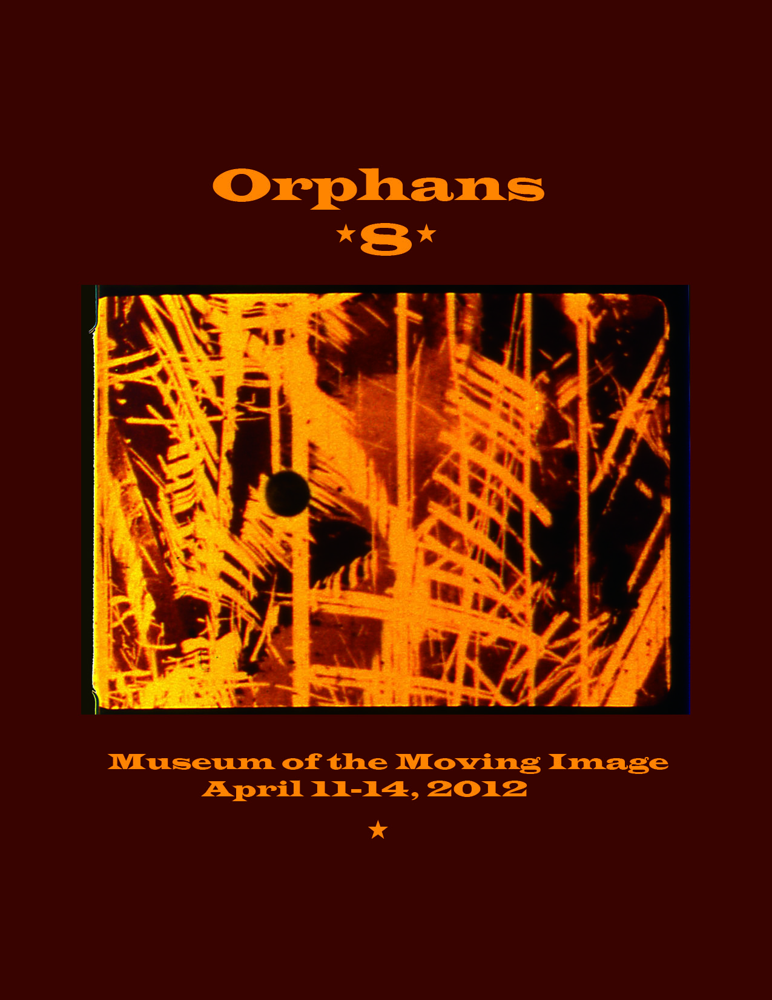
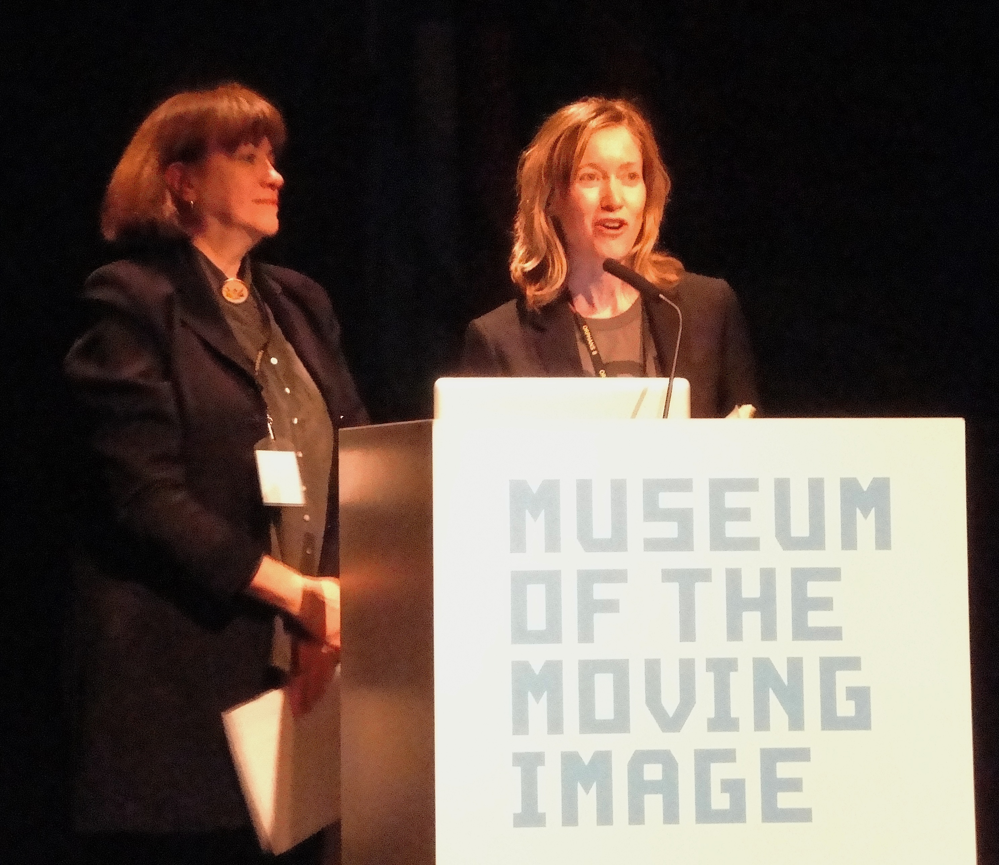
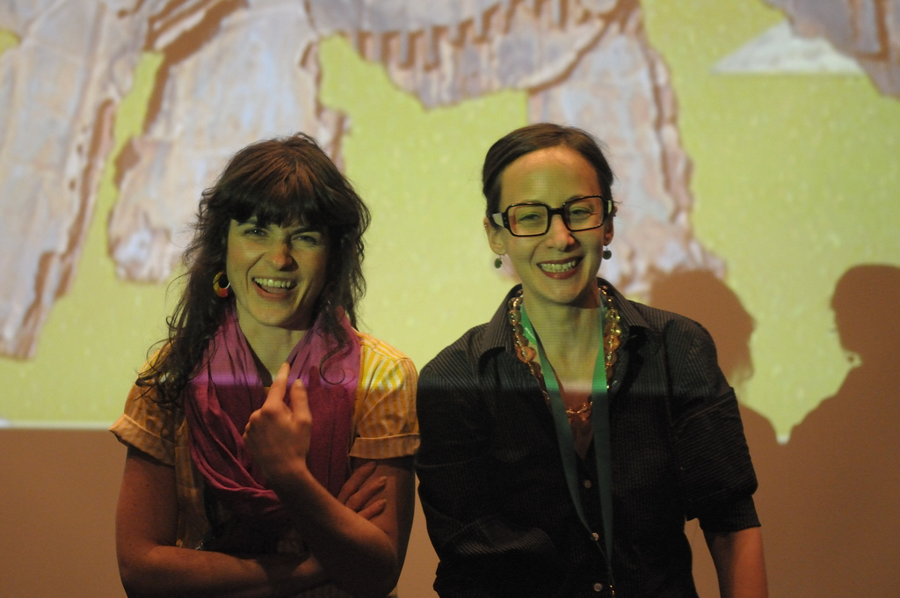
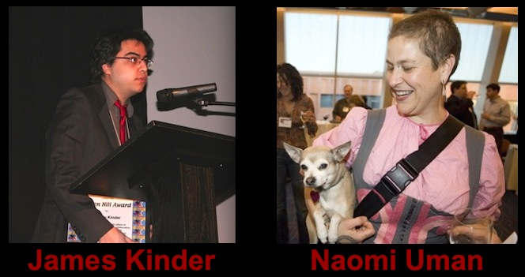

Werner Nekes Receives the 2014 Helen Hill Award

Click here to view a slide show of the award presentation.March 31, 2014. Amsterdam, The Netherlands
At the ninth Orphan Film Symposium, NYU’s Department of Cinema Studies, the Film and Media Studies Program at the University of South Carolina, and the Nickelodeon Theatre of Columbia, SC honored Werner Nekes with the Helen Hill Award. Helen’s mother, Becky Lewis, and Jodie Mack, a previous recipient, presented the award to Nekes at EYE (Netherlands Film Institute) in Amsterdam. Kodak contributed a $1,000 film prize.
The ceremony was part of the symposium’s special evening of screenings on March 31, featuring a new digital incarnation of Nekes’ 1966 film, Start, prepared for the occasion with the technical expertise of Deutsche Kinemathek and EYE. Nekes also gave a talk in which he demonstrated dozens of rare optical devices from his unmatched peronal collection. Franziska Latell, who is writing a dissertation about the artist and his collection, introduced him.
Established in 2008, the Helen Hill Award recognizes exceptional, innovative independent filmmakers whose work befits Hill’s legacy, celebrating creativity, animation, collaboration, and all things made by hand. An experimental filmmaker of international renown, Werner Nekes has been making films, teaching, and collaborating in Germany for nearly fifty years. An avid collector of optical toys who brings pre-cinematic devices of the 19th century and their ways of seeing into conversation with our own in the 21st, Nekes and his work embody the spirit of the Helen Hill Award and offer unique ways to think about the theme of Orphans 9, “The Future of Obsolescence.”
To begin to explore Nekes and his work, visit his website:: http://wernernekes.de
Enhancing the spirit of the evening were two new works. Bill Morrison introduced the world premiere of his La Trochita (Narrow Gauge), assembled from portions of his personal Super 8 films that survived the flooding caused by Hurriane Sandy in 2012. Douglas Goodwin followed with a sneak preview of an experimental documentary he made with Rebecca Baron, Detour de Force, which examines the curious career of Ted Serios and his “thoughtographic” photography.
The Orphan Film Symposium ran March 30 through April 2, a co-presentation of New York University’s Tisch School of the Arts and EYE.
Questions about the Helen Hill Award? dan.streible@nyu.edu and/or Susan Courtney (Director, USC Film and Media Studies Program)
* * * * *
The 2012 Helen Hill Award recipients
 For the 8th Orphan Film Symposium New York University, University of South Carolina, Kodak, and the Nickelodeon Theatre of Columbia presented the 2012 Helen Hill Award to independent filmmakers Jo Dery and Jeanne Liotta. The Award honors the legacy of artist Helen Hill and her accomplishments as a filmmaker, educator, and animator. It supports independent filmmakers of exceptional talent whose works celebrate and embody Hill’s creative spirit, passion, and activism. Jo Dery engages with a variety of media, in both experimental and narrative modes: animated film and video, drawing, illustration, installation, and artist books. She holds a BFA in Film/Animation/Video from the Rhode Island School of Design and an MFA from Goddard College. She began teaching animation at DePaul University’s School of Cinema and Interactive Media in 2011. Jurors for the award found Dery's 16mm film Echoes of Bats and Men (2005) and her "paper puppet and computer animation" Woodpecker in Snowshoes (2008) of particular distinction. Her work is viewable online at JoDery.com. Jeanne Liotta’s creative work includes more than 30 pieces -- including Super 8 films, 16mm films, digital video, and virtual Second Life. Her first film, Blue Moon, was preserved for this occasion by Bill Brand of BB Optics and NYU graduate students in the Moving Image Archiving and Preservation program. Liotta has been on the faculty at the University of Colorado Boulder since 2008. Film Comment named Liotta's Observando del Cielo (2007) one of the ten best experimental films of the decade. Her work can be viewed at JeanneLiotta.net.   Both designed a T-shirt for Orphans 8, Dery with an image adapted from Echoes of Bats and Men and Liotta with a frame from Eclipse (2005), her film that appears on the symposium's DVD. Susan Selig (Kodak) and Laura Kissel (U of South Carolina) conferred the awards, which included $1,000 worth of Kodak film.
* * * *
Helen Hill Awards for 2010: Jodie Mack and Danielle Ash. Read more...
Sample their work at DanielleAsh.com and vimeo.com/JodieMack
Awards for 2008: 
Read more...* * * * *
This award honors work that affirms Helen Hill's artistic legacy, lived values, and everyday passions. In a film culture dominated by corporate interests and the values of consumerism, the Helen Hill Award supports radically independent, innovative filmmaking of exceptional talent. The award will go to filmmakers whose work celebrates and embodies such things as creativity, self-expression, animation, small-gauge film, homemade movies (and all things made by hand), collaboration, generosity, liberal spirituality, activism, love, play, community, and connection.